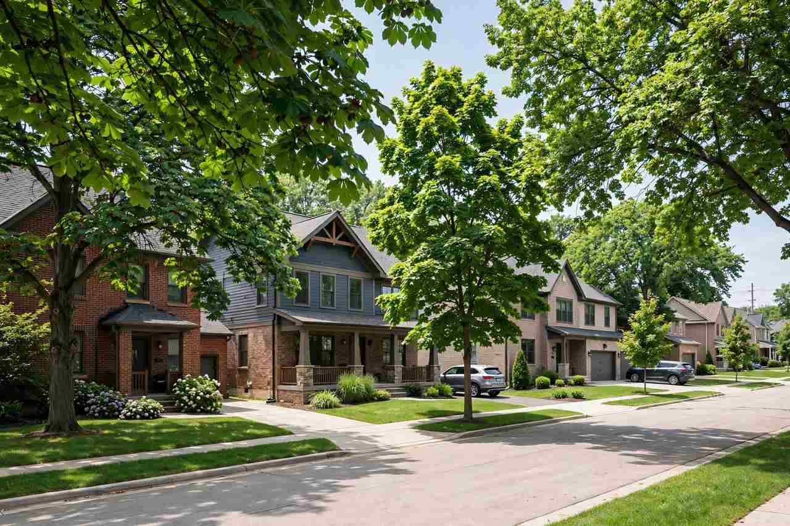

Rodent Control · La Rue, OH
Trusted Rodent Control in La Rue, OH
Hearing scratching at night or finding droppings in La Rue? Murvo is a rodent-only specialist offering same-day service from local crews. We identify the species, remove the infestation, clean up the mess, and exclude rodents for good. Pricing is flat-rate and quoted in writing, the work is guaranteed in writing, and coverage extends across Marion County for homes and businesses alike. Local crews cover 1 ZIP codes in the La Rue area, from Richwood to the far side of Marion County.
24/7Availability
1ZIP codes covered
Same-dayResponse
Licensed · Upfront options · Written guarantees · Fully insured
La Rue at a glance
Local Rodent Control for La Rue, OH.
Marion County
Countycentral Ohio
RegionColumbus · 46 mi
Nearest metro47 miles northwest of Columbus
From Columbus1
ZIP codes covered Service by service in La Rue
Rodent Control Services Available in La Rue
Thirty rodent services, one local standard in La Rue: inspection-led, exclusion-first, and quoted in writing before work begins. Browse the full list for Marion County below - each section explains what the service involves here, what it typically costs nationally, and how fast we can start.
- 01Rodent Control↗
- 02Rodent Inspection↗
- 03Rodent Removal↗
- 04Rodent Exclusion↗
- 05Rodent Proofing↗
- 06Rat Control↗
- 07Mice Control↗
- 08Mouse Removal↗
- 09Rat Removal↗
- 10Rodent Trapping↗
- 11Rodent Baiting↗
- 12Rodenticide Application↗
- 13Attic Rodent Removal↗
- 14Crawl Space Rodent Removal↗
- 15Wall Rodent Removal↗
- 16Kitchen Rodent Control↗
- 17Garage Rodent Control↗
- 18Commercial Rodent Control↗
- 19Residential Rodent Control↗
- 20Emergency Rodent Removal↗
- 21Same-Day Rodent Control↗
- 22Rodent Damage Repair↗
- 23Rodent Waste Cleanup↗
- 24Rodent Disinfection↗
- 25Rodent Odor Removal↗
- 26Dead Rodent Removal↗
- 27Rodent Dropping Cleanup↗
- 28Rodent Exclusion for Roofs↗
- 29Rodent Exclusion for Vents↗
- 30Rodent Exclusion for Chimneys↗
Rodent Control in La Rue
Rodent Control in La Rue
A single mouse sighting in a La Rue kitchen rarely means a single mouse. Rodents breed fast, contaminate food areas, and gnaw wiring long before the damage is obvious. Murvo responds with same-day appointments where available, a background-checked local crew, and a coordinated program of trapping, exclusion, cleanup guidance, and monitoring that keeps working after the first visit ends.
When you need rodent control in La Rue, the job starts with what is actually happening in your part of Marion County. Murvo crews work La Rue every week, so they know how Norway rat (Rattus norvegicus) and House mouse (Mus musculus) behave around vintage duplexes and stone homes, brick bungalows, older single-family homes, and farm and rural properties here - and where they get in: basement foundations, alley-facing garage doors, sewer laterals, and gaps around utility lines and sills. We arrive equipped for the full job, confirm the flat rate in writing before work begins, and cover the whole La Rue area, including New Bloomington, Mount Victory. No call-center runaround and no open-ended hourly billing - just a local crew, a clear plan, and a written quote you approve first. Seasonal timing matters for rodent control in La Rue: rodents surge in La Rue from October through April.
Consider how a visit unfolds. Inside, attic and crawl-space evidence shapes the trapping plan, which is adjusted visit by visit as numbers change. Cleanup guidance covers contaminated areas safely, and exclusion work closes the route permanently. Throughout, photographs and written notes keep you informed, so progress is something you can see and verify rather than something you are asked to trust. The technician walks the exterior before touching anything indoors, noting gaps, rub marks, and food sources. Photographs taken at the start make those later comparisons honest, because memory alone tends to blur the details.
After you book, we confirm a time window and your background-checked technician arrives in a marked vehicle with identification. They walk the property with you, inspect inside and out, and explain what they find with photos. You receive a flat-rate written quote before any work starts. Once approved, trapping and sealing begin, and follow-up visits are scheduled before we leave, with the guarantee in writing. No work begins without your approval.
In most of La Rue, we can offer a same-day appointment for rodent control, and our lines are open 24/7 for urgent cases like scratching in the walls or a rodent in a living area. Your technician inspects first, explains the plan, and quotes a flat rate in writing before any work begins, so help starts fast without surprises. In Marion County, most cases involve the Norway rat (Rattus norvegicus) and the House mouse (Mus musculus), so the inspection focuses on their routes first.
The honest answer is that it depends on species, activity level, and how much sealing your home needs, which is why Murvo inspects first and then gives you a flat-rate quote in writing. For national context only, Angi's 2026 data averages rat and mouse removal and control at $396, typically $189 to $655; that is not a Murvo price, and your written quote is the figure you pay.
Rodent Inspection in La Rue
Rodent Inspection in La Rue
In vintage duplexes and stone homes, brick bungalows, older single-family homes, and farm and rural properties, the gap that matters is seldom the gap you can see. Rodents enter through basement foundations, alley-facing garage doors, sewer laterals, and gaps around utility lines and sills and travel hidden routes, so a rodent inspection in Marion County has to look behind, above, and below. Our technicians trace those routes systematically and explain, in plain language, which findings demand action now.
When you need rodent inspection in La Rue, the job starts with what is actually happening in your part of Marion County. Murvo crews work La Rue every week, so they know how Norway rat (Rattus norvegicus) and House mouse (Mus musculus) behave around vintage duplexes and stone homes, brick bungalows, older single-family homes, and farm and rural properties here - and where they get in: basement foundations, alley-facing garage doors, sewer laterals, and gaps around utility lines and sills. We arrive equipped for the full job, confirm the flat rate in writing before work begins, and cover the whole La Rue area, including New Bloomington, Mount Victory. No call-center runaround and no open-ended hourly billing - just a local crew, a clear plan, and a written quote you approve first. Homes near Richwood tend to show activity first in La Rue, which is why inspections start with basement foundations, alley-facing garage doors, sewer laterals, and gaps around utility lines and sills.
The inspection starts outside, where we check the foundation, siding, pipe penetrations, garage doors, and roof junctions, because mice can squeeze through a gap the width of a pencil. Inside, we examine the attic, crawl space, insulation, stored items, and food areas for droppings, nests, rub marks, and gnaw damage. We also note where vintage duplexes and stone homes, brick bungalows, older single-family homes, and farm and rural properties create hidden routes through basement foundations, alley-facing garage doors, sewer laterals, and gaps around utility lines and sills. Every finding is photographed and explained, and recommendations are marked urgent or preventive so you can stage the work sensibly.
Booking a rodent inspection in La Rue takes one call, and same-day appointments are often available. Findings are explained with photos before you receive a flat-rate written quote for any recommended work. Nothing proceeds without your approval, and urgent items are clearly flagged. Your technician arrives on time, walks the property with you, and inspects the attic, crawl space, and exterior in one visit. You keep the full written report either way.
You do not have to wait days for answers in La Rue. Same-day rodent inspection appointments are available in most areas, urgent calls are taken 24/7, and most home inspections take under an hour. You finish the visit with photos, written findings, and flat-rate pricing for anything we recommend. Around La Rue, vintage duplexes and stone homes, brick bungalows, older single-family homes, and farm and rural properties give rodents the most cover, which is why entry points get checked before traps are set.
Your exact rodent inspection price is confirmed before we visit, and any follow-up work is quoted as a flat rate in writing after the inspection — no hourly billing. For context, Angi's 2026 data puts a professional rodent inspection nationally at $100 to $200, often credited toward the job if you proceed.
Rodent Removal in La Rue
Rodent Removal in La Rue
Most La Rue removal calls start after a homeowner has already tried a store-bought trap and caught nothing. The difference is placement and persistence. Murvo locates nests first, sets traps on confirmed routes for Norway rat (Rattus norvegicus) and House mouse (Mus musculus), returns until catches end, and quotes the whole program as one flat-rate written quote.
In La Rue, rodent removal is not a generic spray-and-go service. Rodents exploit basement foundations, alley-facing garage doors, sewer laterals, and gaps around utility lines and sills in vintage duplexes and stone homes, brick bungalows, older single-family homes, and farm and rural properties, and a fix that ignores those routes does not last. Murvo's La Rue team inspects first, shows you the evidence - droppings, gnaw marks, entry gaps - and then lays out the work with a flat-rate written quote. We serve all of Marion County from La Rue, including New Bloomington, Mount Victory, and every job is covered by our written workmanship guarantee. Homes near Richwood tend to show activity first in La Rue, which is why inspections start with basement foundations, alley-facing garage doors, sewer laterals, and gaps around utility lines and sills.
We favor trap-based, no-poison removal first where practical, which is safer around children and pets and avoids animals dying in hidden voids. Dead animals in inaccessible places are located and retrieved before odor develops, contaminated nesting material is removed, and sealing recommendations are prioritized so the route indoors closes permanently. Traps are matched to the species and setting, placed where droppings and rub marks show real travel routes, then cleared and reset until numbers reach zero. Monitoring then confirms the home stays clear.
Once removal is underway, expect short, predictable visits. Your technician checks each mapped trap, removes catches hygienically, resets what is still needed, and updates the record with you. When catches reach zero, monitoring confirms it, sealing is discussed, and the job closes with a walkthrough and your guarantee paperwork in hand before we leave. At close, prevention advice is tailored to what actually attracted rodents to your property, not copied from a generic checklist.
For active infestations in La Rue, rodent removal can usually start the same day you call, and our team answers 24/7 when a rodent is loose in a living area. The first visit confirms activity and sets traps straight away; return visits then clear and reset them until monitoring shows the property is completely clear. A La Rue inspection confirms it on site - dropping size, gnaw marks, and entry points tell the story quickly.
How many animals are active, which species they are, and how much sealing follows removal all shape the price, so we assess first and then quote one flat rate in writing. Angi's 2026 national context — an average of $396 and a typical $189 to $655 range for rat and mouse removal — is provided for comparison only; your written quote is the exact Murvo figure.
Rodent Exclusion in La Rue
Rodent Exclusion in La Rue
Exclusion is also the safest long-term strategy for La Rue homes, because a sealed house needs far less bait and fewer repeat treatments. Murvo's licensed, insured crews finish roof, vent, and chimney work to weatherproof standards, walk every sealed opening with you afterwards, and back the result with a written workmanship guarantee you can hold us to.
Homeowners in La Rue call Murvo for rodent exclusion because the problem here is specific: Norway rat (Rattus norvegicus) pressure around vintage duplexes and stone homes, brick bungalows, older single-family homes, and farm and rural properties, tight access at basement foundations, alley-facing garage doors, sewer laterals, and gaps around utility lines and sills, and activity that follows the local season. Our Marion County crews diagnose the real source before recommending work, explain the options in plain language, and quote one flat rate in writing. Across La Rue - including New Bloomington, Mount Victory - every visit is backed by licensed, insured technicians and our written workmanship guarantee. Around Richwood, Morral, Kenton, the pattern is similar: House mouse (Mus musculus) finds basement foundations, alley-facing garage doors, sewer laterals, and gaps around utility lines and sills first, and lasting rodent exclusion has to close those routes.
The sequence matters as much as the materials. Because a properly sealed home needs far less ongoing treatment, exclusion also lowers long-term reliance on bait. A later monitoring check tests the work honestly, revisiting each sealed point for fresh rub marks, droppings, or gnawing. Active openings are closed first, inactive weaknesses next, and purely cosmetic gaps last, so protection arrives where pressure is highest. Photographs record every finished seal with its location, building a reference you keep. The final monitoring visit therefore matters as much as the sealing day itself, and its findings are shared.
Book the survey, and we will work around your schedule, including urgent openings near wiring or food storage. Your technician lists every gap found, explains which are active, and quotes the sealing as one written figure. Approved work is completed opening by opening, photographed as it progresses, and reviewed with you before the visit ends. The finished inventory lists every material used at every opening, which makes later inspections faster and keeps the guarantee easy to enforce.
The first step is a survey, and in La Rue we can often schedule that survey the same day you call about rodent exclusion. Sealing follows once active animals are cleared — nothing is ever sealed inside — and most homes are fully sealed within days, with entry points near wiring or food areas handled first. A La Rue inspection confirms it on site - dropping size, gnaw marks, and entry points tell the story quickly.
After the survey of your La Rue home, every opening that needs sealing is listed and priced as one flat-rate written quote, so you pay only for the work your property needs. For national context, Angi's 2026 data puts basic exclusion at $200 to $600 depending on access and the number of openings; that benchmark is not a Murvo price.
Rodent Proofing in La Rue
Rodent Proofing in La Rue
Most La Rue proofing clients have not seen a rodent yet, and that is exactly the point. A rodent proofing survey finds the gaps, screens, and habits that would invite Norway rat (Rattus norvegicus) and House mouse (Mus musculus) in later, then fixes them in priority order under one flat-rate written quote you approve first.
Homeowners in La Rue call Murvo for rodent proofing because the problem here is specific: Norway rat (Rattus norvegicus) pressure around vintage duplexes and stone homes, brick bungalows, older single-family homes, and farm and rural properties, tight access at basement foundations, alley-facing garage doors, sewer laterals, and gaps around utility lines and sills, and activity that follows the local season. Our Marion County crews diagnose the real source before recommending work, explain the options in plain language, and quote one flat rate in writing. Across La Rue - including New Bloomington, Mount Victory - every visit is backed by licensed, insured technicians and our written workmanship guarantee. In La Rue, rodent proofing calls most often involve vintage duplexes and stone homes, brick bungalows, older single-family homes, and farm and rural properties, where basement foundations, alley-facing garage doors, sewer laterals, and gaps around utility lines and sills decide whether the fix holds.
Proofing starts with a whole-property assessment inside and out, from overhanging branches and cluttered garages to unsealed vents and gaps under doors. The plan typically combines structural sealing of utility entries and foundation cracks with mesh screening on vents, chimneys, and rooflines, plus door sweeps where light shows underneath. We also address attractants: securing pet food and bird seed storage, trimming vegetation away from walls, and clearing harborage. Every item is prioritized so essential work happens first. Photos show each weakness we find.
On proofing day, expect one tidy visit for most homes. Agreed sealing and screening are completed, sweeps are fitted, and attractant advice is tailored to your garage, kitchen, and yard. Before leaving, you walk the finished work together, confirm the guarantee in writing, and book the seasonal re-check that keeps the protection current year after year. The re-check is not a formality, because it catches shifted sweeps, damaged screens, and new gaps before rodents discover them first.
Proofing is planned work rather than an emergency, but you can still move fast: rodent proofing surveys in La Rue are often available the same day and always within a few days. Once you approve the plan, most work is finished in a single visit, ideally before colder weather drives rodents indoors. A La Rue inspection confirms it on site - dropping size, gnaw marks, and entry points tell the story quickly.
For national context, Angi's 2026 data puts exclusion, the core of proofing, at $200 to $600 for basic work. That figure is a benchmark, not a Murvo price. After surveying your La Rue property, we separate quick homeowner wins from specialist sealing and quote the professional work as one flat rate in writing, so you can stage spending sensibly.
Rat Control in La Rue
Rat Control in La Rue
Most La Rue rat calls start with evidence in the attic: droppings too large for mice, greasy rub marks, insulation tunneled overnight. Murvo identifies whether Norway rat (Rattus norvegicus) or House mouse (Mus musculus) is responsible, maps nightly routes, and builds control around trapping and exclusion. One flat-rate written quote is approved before work begins.
Homeowners in La Rue call Murvo for rat control because the problem here is specific: Norway rat (Rattus norvegicus) pressure around vintage duplexes and stone homes, brick bungalows, older single-family homes, and farm and rural properties, tight access at basement foundations, alley-facing garage doors, sewer laterals, and gaps around utility lines and sills, and activity that follows the local season. Our Marion County crews diagnose the real source before recommending work, explain the options in plain language, and quote one flat rate in writing. Across La Rue - including New Bloomington, Mount Victory - every visit is backed by licensed, insured technicians and our written workmanship guarantee. In La Rue, rat control calls most often involve vintage duplexes and stone homes, brick bungalows, older single-family homes, and farm and rural properties, where basement foundations, alley-facing garage doors, sewer laterals, and gaps around utility lines and sills decide whether the fix holds.
Safety shapes every placement decision. Where bait is genuinely necessary outdoors, it goes only inside locked, tamper-resistant stations, secured and labeled, never loose, and always alongside trapping and sealing rather than instead of them. Droppings are handled carefully: surfaces are disinfected before cleaning, never dry-swept, because disturbing dry material can spread contamination through the air. Traps are positioned away from pet routes and play areas and explained to the household in advance. Households receive that safety briefing in plain terms before the first station or trap is ever left behind.
Between visits, keep pet food secured and avoid moving any traps, even slightly, since position matters. Your background-checked technician returns on schedule, removes trapped rats promptly, adjusts placements, and reports counts plainly. The program closes only when monitoring confirms activity has ended and exclusion is finished, with your guarantee confirmed in writing at sign-off. Keep gates and access points available on scheduled days where possible, since uninterrupted checks keep the program on its planned timetable.
Call day or night — urgent rat control calls in La Rue are answered 24/7, and a same-day inspection can usually start the program. Pre-baiting begins on that first visit once you approve the written quote, traps are set when rats are feeding confidently, and scheduled checks continue until activity stops. Murvo's La Rue crews explain the finding either way, and the flat-rate quote leaves the decision with you.
Rat work varies with species, colony size, and how many entry points need sealing, so Murvo inspects first and quotes one flat rate in writing. For national context only, Angi's 2026 data averages rat control and removal at $396, typically $189 to $655. That benchmark is not a Murvo price; the written quote for your La Rue home is the exact figure you pay.
Mice Control in La Rue
Mice Control in La Rue
Mice slip into vintage duplexes and stone homes, brick bungalows, older single-family homes, and farm and rural properties in La Rue through basement foundations, alley-facing garage doors, sewer laterals, and gaps around utility lines and sills and settle near warmth and food: behind appliances, inside attic voids, and along pipe runs. Because they investigate new objects quickly, clustered traps work fast when placed correctly. Our licensed, insured technicians also advise on food storage and scent-trail cleaning, then confirm with follow-up visits that activity has genuinely stopped.
When you need mice control in La Rue, the job starts with what is actually happening in your part of Marion County. Murvo crews work La Rue every week, so they know how Norway rat (Rattus norvegicus) and House mouse (Mus musculus) behave around vintage duplexes and stone homes, brick bungalows, older single-family homes, and farm and rural properties here - and where they get in: basement foundations, alley-facing garage doors, sewer laterals, and gaps around utility lines and sills. We arrive equipped for the full job, confirm the flat rate in writing before work begins, and cover the whole La Rue area, including New Bloomington, Mount Victory. No call-center runaround and no open-ended hourly billing - just a local crew, a clear plan, and a written quote you approve first. Homes near Richwood tend to show activity first in La Rue, which is why inspections start with basement foundations, alley-facing garage doors, sewer laterals, and gaps around utility lines and sills.
Hygiene is part of control, not an afterthought. Droppings in cabinets are never dry-swept; surfaces are disinfected first, following careful practice, so contamination is not pushed into the air, and nesting debris is bagged and removed. Technicians also review how food, pet supplies, and bird seed are stored, since an open supply restarts activity quickly. The program favors traps over bait throughout, which keeps family kitchens safer and makes every result countable and visible. Follow-up monitoring then verifies the kitchen, attic, and voids together, rather than treating each room in isolation.
During the program, store opened food in sealed containers and keep trap areas undisturbed. Your background-checked technician returns to clear and reset clusters, adjusts placements if the pattern shifts, and completes sealing once numbers fall. At the end you review the catch record together, receive prevention advice, and confirm the written guarantee before close. Prevention notes cover the exact storage and sealing issues found at your home, making them practical rather than generic advice.
Mice multiply fast, so mice control in La Rue is built to start fast too: a survey can often be arranged the same day you call, with traps set on that first visit once the quote is approved. Because mice investigate new objects quickly, catches usually begin soon after, and check visits follow until a final confirmation shows activity has stopped. Around La Rue, vintage duplexes and stone homes, brick bungalows, older single-family homes, and farm and rural properties give rodents the most cover, which is why entry points get checked before traps are set.
The number of rooms affected and the amount of sealing required set the price, so Murvo surveys first and quotes one flat rate in writing. For national context only, Angi's 2026 data averages rat and mouse control and removal at $396, typically $189 to $655 — not a Murvo price; your written quote is exact.
Mouse Removal in La Rue
Mouse Removal in La Rue
In vintage duplexes and stone homes, brick bungalows, older single-family homes, and farm and rural properties, warmth decides where mice settle: near boilers, behind appliances, inside kitchen cabinets, and along basement foundations, alley-facing garage doors, sewer laterals, and gaps around utility lines and sills routes across Marion County. Our mouse removal checks those warm pockets deliberately, including spots homeowners rarely open, so a hidden nest raising young does not survive to restart the problem weeks later.
Homeowners in La Rue call Murvo for mouse removal because the problem here is specific: Norway rat (Rattus norvegicus) pressure around vintage duplexes and stone homes, brick bungalows, older single-family homes, and farm and rural properties, tight access at basement foundations, alley-facing garage doors, sewer laterals, and gaps around utility lines and sills, and activity that follows the local season. Our Marion County crews diagnose the real source before recommending work, explain the options in plain language, and quote one flat rate in writing. Across La Rue - including New Bloomington, Mount Victory - every visit is backed by licensed, insured technicians and our written workmanship guarantee. The La Rue crews who handle mouse removal also handle the follow-through - proofing, cleanup, and monitoring - so one visit can close the whole problem.
Trap-based removal is the default here for practical reasons. Cleanup follows the same care: droppings and nesting are never dry-swept, surfaces are disinfected first, and waste is bagged and removed hygienically. Once activity ends, access points are sealed thoroughly, and advice on storage and scent-trail cleaning helps the kitchen stay clear. It is safer around children and pets, results are visible and countable, and no animal is left to die inside a hidden void. Monitoring after sealing confirms the finish, so the result rests on evidence rather than a hopeful guess.
For urgent mouse problems in La Rue, contact Murvo for a same-day response where available. The final visit confirms the result and your written workmanship guarantee. Your technician surveys the home, explains the multi-trap plan, and confirms a flat-rate written quote before starting. Return visits are scheduled to clear and reset traps, and cleanup and sealing follow once catches reach zero. You are updated after every visit, without ever chasing us.
In La Rue, mouse removal can often begin the same day you call, especially where mice are active in kitchens or living areas. The first visit surveys nesting sites and sets traps immediately after you approve the quote; because mice investigate traps quickly, catches usually start fast, and return visits continue until numbers reach zero. Around La Rue, vintage duplexes and stone homes, brick bungalows, older single-family homes, and farm and rural properties give rodents the most cover, which is why entry points get checked before traps are set.
Mouse removal cost reflects the number of rooms involved and how much sealing is needed, which is why Murvo surveys first and quotes a flat rate in writing. For national context only, Angi's 2026 data averages rat and mouse removal at $396, typically $189 to $655. That benchmark is not a Murvo price; your written quote covers your exact program.
Rat Removal in La Rue
Rat Removal in La Rue
Roof rats and Norway rats behave and enter very differently, and in La Rue the distinction decides where traps go and which gaps get sealed. vintage duplexes and stone homes, brick bungalows, older single-family homes, and farm and rural properties reached through basement foundations, alley-facing garage doors, sewer laterals, and gaps around utility lines and sills can hide attic colonies or basement harborage for months. Our licensed, background-checked technicians trace the full route, remove the colony, and sanitize contaminated areas where nests were found.
Homeowners in La Rue call Murvo for rat removal because the problem here is specific: Norway rat (Rattus norvegicus) pressure around vintage duplexes and stone homes, brick bungalows, older single-family homes, and farm and rural properties, tight access at basement foundations, alley-facing garage doors, sewer laterals, and gaps around utility lines and sills, and activity that follows the local season. Our Marion County crews diagnose the real source before recommending work, explain the options in plain language, and quote one flat rate in writing. Across La Rue - including New Bloomington, Mount Victory - every visit is backed by licensed, insured technicians and our written workmanship guarantee. Homes near Richwood tend to show activity first in La Rue, which is why inspections start with basement foundations, alley-facing garage doors, sewer laterals, and gaps around utility lines and sills.
Removal begins by establishing species and the scale of the problem, because a single transient rat and an attic colony need very different programs. Sealing follows once the property is clear. Technicians pre-bait unset traps on confirmed runways so cautious rats feed without fear, then set them, returning frequently to remove animals hygienically and adjust placements as activity shifts. Attic colonies may need dedicated attic work, while a carcass in a void calls for retrieval and odor treatment. Nothing is rushed at this stage.
Book rat removal in La Rue and we will agree a visit time, with same-day appointments available for active infestations. Your technician assesses species and colony size, explains the program, and confirms a flat-rate written quote before trapping starts. Repeat visits are scheduled ahead to remove animals and adjust traps. At the end, monitoring and a walkthrough confirm clearance, backed by our written workmanship guarantee. You see documented evidence of the result.
In La Rue, rat removal can usually start the same day you call, with 24/7 answering for rats active in living areas. Pre-baiting begins on the first visit after you approve the written quote, and traps are set once rats feed confidently, typically within days. Repeat visits then run frequently until monitoring confirms the colony is gone. In Marion County, most cases involve the Norway rat (Rattus norvegicus) and the House mouse (Mus musculus), so the inspection focuses on their routes first.
Rat removal pricing depends on colony size, access, and the sealing needed afterwards, so Murvo assesses your property first and quotes a flat rate in writing. For national context only, Angi's 2026 data averages rat removal at $396, typically $189 to $655. That is a benchmark, not a Murvo price, and your written quote covers the full program described.
Rodent Trapping in La Rue
Rodent Trapping in La Rue
Trapping is the most accountable way to clear rodents: every catch is counted, located, and recorded. Murvo's rodent trapping in La Rue places traps perpendicular to walls and along beams, pipes, and fence lines where rodents actually travel, using snap traps, multi-catch devices, or live-capture options as the situation requires. You approve one flat-rate written quote before we start.
When you need rodent trapping in La Rue, the job starts with what is actually happening in your part of Marion County. Murvo crews work La Rue every week, so they know how Norway rat (Rattus norvegicus) and House mouse (Mus musculus) behave around vintage duplexes and stone homes, brick bungalows, older single-family homes, and farm and rural properties here - and where they get in: basement foundations, alley-facing garage doors, sewer laterals, and gaps around utility lines and sills. We arrive equipped for the full job, confirm the flat rate in writing before work begins, and cover the whole La Rue area, including New Bloomington, Mount Victory. No call-center runaround and no open-ended hourly billing - just a local crew, a clear plan, and a written quote you approve first. In La Rue, rodent trapping calls most often involve vintage duplexes and stone homes, brick bungalows, older single-family homes, and farm and rural properties, where basement foundations, alley-facing garage doors, sewer laterals, and gaps around utility lines and sills decide whether the fix holds.
A trapping program starts with inspection: identifying the species, mapping runways, and finding where droppings and rub marks show real travel. Traps are set perpendicular to walls and along beams, pipes, and fence lines, matched to the setting. For rats, we pre-bait unset traps for several days, a step most DIY attempts skip, then set them for maximum effect. Mice receive clustered traps at hotspots. Technicians return on schedule to clear, reset, and record every catch. Placements shift as activity patterns change.
Book rodent trapping in La Rue and a technician can often start the same day. When numbers reach zero, we confirm monitoring is clear and discuss sealing. The first visit inspects, maps activity, and places or pre-baits traps; you approve a flat-rate written quote covering the program including check visits before we proceed. Scheduled returns clear and reset traps and share catch records with you. The finished program is guaranteed in writing.
In La Rue, a rodent trapping program can usually start the same day you call, with traps placed or pre-baiting begun on the first visit after you approve the quote. Mice often investigate within the first night, while wary rats need a few days of pre-baiting before traps are set. Scheduled checks then keep the program moving until numbers reach zero. If you are seeing signs now, an inspection this week is the fastest way to know which situation you are in.
Rather than charging by the trap or by the visit, Murvo inspects first and quotes rodent trapping as one flat rate in writing for the complete program, including its check visits. Price depends on species, activity level, and how many checks are needed, and there is no hourly billing at any stage, so there are no per-visit surprises.
Rodent Baiting in La Rue
Rodent Baiting in La Rue
In vintage duplexes and stone homes, brick bungalows, older single-family homes, and farm and rural properties, bait has a narrow, specific job: reducing outdoor pressure while sealing removes the indoor route through basement foundations, alley-facing garage doors, sewer laterals, and gaps around utility lines and sills. Our technicians in Marion County place secured stations along runways away from play areas, label and photograph each one, and check consumption on schedule until activity ends and stations come out.
When you need rodent baiting in La Rue, the job starts with what is actually happening in your part of Marion County. Murvo crews work La Rue every week, so they know how Norway rat (Rattus norvegicus) and House mouse (Mus musculus) behave around vintage duplexes and stone homes, brick bungalows, older single-family homes, and farm and rural properties here - and where they get in: basement foundations, alley-facing garage doors, sewer laterals, and gaps around utility lines and sills. We arrive equipped for the full job, confirm the flat rate in writing before work begins, and cover the whole La Rue area, including New Bloomington, Mount Victory. No call-center runaround and no open-ended hourly billing - just a local crew, a clear plan, and a written quote you approve first. Seasonal timing matters for rodent baiting in La Rue: rodents surge in La Rue from October through April.
Placement discipline protects the household. Stations stay away from pet play areas, food storage, and anywhere children gather, and every location is agreed with you before installation. If a property cannot be baited safely, technicians say so and rely on trapping and proofing instead. Records from each visit show consumption trends honestly, including when activity has moved rather than fallen, so decisions about continuing, relocating, or removing stations rest on evidence you can inspect yourself. You receive copies of those records, so the reasoning behind every placement decision is open to inspection.
Booking rodent baiting in La Rue starts with an inspection, not a station. Approved stations are installed locked and labeled the same visit, with locations photographed for you. Monitoring visits are scheduled before we leave, and stations come out once activity is confirmed clear. Your technician maps activity, reviews pet, child, and wildlife concerns with you, and confirms a flat-rate written quote before anything is placed. Your written guarantee covers the full program.
In La Rue, rodent baiting starts with an inspection visit we can often arrange the same day you call. Stations are only placed after activity is mapped and you approve the written quote and each location, so setup is deliberate rather than rushed. Monitoring visits then run on a fixed schedule until consumption stops and activity is confirmed clear. Murvo's La Rue crews explain the finding either way, and the flat-rate quote leaves the decision with you.
How many locked stations your property needs and how long monitoring runs determine the cost, so Murvo inspects and maps activity first, then quotes one flat rate in writing covering placement and scheduled checks. There are no per-visit surprises, and because the approach is exclusion-first, the aim is to reduce and eventually remove stations rather than maintain them forever.
Rodenticide Application in La Rue
Rodenticide Application in La Rue
In vintage duplexes and stone homes, brick bungalows, older single-family homes, and farm and rural properties, product choice is only half the decision; placement and oversight matter just as much near basement foundations, alley-facing garage doors, sewer laterals, and gaps around utility lines and sills routes in Marion County. Licensed Murvo technicians use tamper-resistant locked stations exclusively, map and label every unit, record amounts at each visit, and retrieve accessible carcasses promptly to limit odor and secondary risks.
Homeowners in La Rue call Murvo for rodenticide application because the problem here is specific: Norway rat (Rattus norvegicus) pressure around vintage duplexes and stone homes, brick bungalows, older single-family homes, and farm and rural properties, tight access at basement foundations, alley-facing garage doors, sewer laterals, and gaps around utility lines and sills, and activity that follows the local season. Our Marion County crews diagnose the real source before recommending work, explain the options in plain language, and quote one flat rate in writing. Across La Rue - including New Bloomington, Mount Victory - every visit is backed by licensed, insured technicians and our written workmanship guarantee. Homes near Richwood tend to show activity first in La Rue, which is why inspections start with basement foundations, alley-facing garage doors, sewer laterals, and gaps around utility lines and sills.
The first decision is whether application is justified, and often it is not. Monitoring data then governs whether treatment continues, changes, or stops in favor of proofing alone. Inspection confirms species and activity, then trapping and exclusion are weighed honestly; if those methods can solve the problem safely, they are recommended instead. Where treatment is justified, stations are mapped, anchored, and labeled, products remain inside locked units at all times, and scheduled checks record amounts precisely. If consumption patterns look unusual, technicians investigate rather than simply refilling, because unexpected patterns can signal a different species.
Booking rodenticide application in La Rue starts with an inspection visit, often available the same day. If you proceed, stations are installed locked and labeled, monitoring visits are scheduled, and treatment continues only while monitoring data supports it, under our written workmanship guarantee. Your licensed technician confirms whether treatment is justified, explains safer alternatives first, and gives you a flat-rate written quote before anything is applied. You can stop the program at any point.
No responsible rodenticide application starts without an inspection, and in La Rue that inspection can often be scheduled the same day you call. If treatment is justified and you approve the written quote, locked stations are installed on that visit. Monitoring then runs on schedule, and treatment stops as soon as the data shows activity has ended. In Marion County, activity follows the local season, so timing the work matters as much as the method.
Station numbers, the product permitted under Ohio rules, and the length of monitoring all shape the price. Murvo inspects first, explains whether trapping or exclusion could avoid chemical control entirely, and then quotes one flat rate in writing before work begins. That quote covers scheduled monitoring visits, so there are no per-visit surprises later.
Attic Rodent Removal in La Rue
Attic Rodent Removal in La Rue
In vintage duplexes and stone homes, brick bungalows, older single-family homes, and farm and rural properties, attics reward rodents generously: warm insulation for nesting, quiet during daylight, and access through basement foundations, alley-facing garage doors, sewer laterals, and gaps around utility lines and sills that stays invisible from the ground across Marion County. Our technicians photograph nests, droppings, and gnawed cables, check for young, and examine adjoining crawl spaces so connected activity is not left behind.
In La Rue, attic rodent removal is not a generic spray-and-go service. Rodents exploit basement foundations, alley-facing garage doors, sewer laterals, and gaps around utility lines and sills in vintage duplexes and stone homes, brick bungalows, older single-family homes, and farm and rural properties, and a fix that ignores those routes does not last. Murvo's La Rue team inspects first, shows you the evidence - droppings, gnaw marks, entry gaps - and then lays out the work with a flat-rate written quote. We serve all of Marion County from La Rue, including New Bloomington, Mount Victory, and every job is covered by our written workmanship guarantee. Around Richwood, Morral, Kenton, the pattern is similar: House mouse (Mus musculus) finds basement foundations, alley-facing garage doors, sewer laterals, and gaps around utility lines and sills first, and lasting attic rodent removal has to close those routes.
Cleanup overhead demands care. Contaminated insulation is assessed honestly, with repair referrals where replacement is warranted. Poison is avoided in attics deliberately, since animals dying in inaccessible corners create odor and retrieval problems. Adjoining crawl spaces are checked before the job is signed off as complete. Droppings and nesting material are never dry-swept, because that can spread contamination into the air; surfaces are disinfected first, then waste is removed hygienically by technicians in protective equipment. The result is a documented attic: cleared, sealed, cleaned where needed, and verified quiet before closure.
Book an attic visit, same-day where wiring damage or heavy activity makes it urgent. Your technician inspects overhead and along the roofline, shows you photographs of the evidence, and confirms the written quote. Trapping starts after approval, follow-up checks are booked ahead, and sealing plus cleanup complete the sequence before monitoring confirms the result. Wiring or insulation concerns are flagged separately in writing, so you can arrange any specialist repairs with clear information in hand.
Overhead scratching in La Rue often gets a same-day attic rodent removal visit, and attics with chewed wiring are prioritized because of the fire risk. Trapping starts on the first visit once you approve the written quote, checks run on schedule, and most attics are cleared and sealed within days. Monitoring stays in place briefly afterwards to confirm nothing remains inside. In Marion County, activity follows the local season, so timing the work matters as much as the method.
Attic costs depend on how many animals are active, how much sealing the roofline needs, and whether contaminated insulation requires cleanup, so Murvo inspects first and quotes one flat rate in writing. That quote covers the removal program described, with cleanup options priced separately in writing before you decide, so there are no surprises once work is underway.
Crawl Space Rodent Removal in La Rue
Crawl Space Rodent Removal in La Rue
Why avoid poison beneath a home? Pets can access crawl spaces, and carcasses hidden under a house are difficult to retrieve. Murvo favors trapping and physical exclusion instead, delivered by licensed, insured technicians who photograph every sealed opening, refit access panels securely, and confirm results with monitoring under a written guarantee.
When you need crawl space rodent removal in La Rue, the job starts with what is actually happening in your part of Marion County. Murvo crews work La Rue every week, so they know how Norway rat (Rattus norvegicus) and House mouse (Mus musculus) behave around vintage duplexes and stone homes, brick bungalows, older single-family homes, and farm and rural properties here - and where they get in: basement foundations, alley-facing garage doors, sewer laterals, and gaps around utility lines and sills. We arrive equipped for the full job, confirm the flat rate in writing before work begins, and cover the whole La Rue area, including New Bloomington, Mount Victory. No call-center runaround and no open-ended hourly billing - just a local crew, a clear plan, and a written quote you approve first. The La Rue crews who handle crawl space rodent removal also handle the follow-through - proofing, cleanup, and monitoring - so one visit can close the whole problem.
Cleanup beneath a home follows careful practice throughout. Technicians also trace connections upward through wall voids, checking whether activity reaches the attic, and report moisture issues with practical recommendations. Photographs of every finished seal accompany your guarantee paperwork, creating a record of exactly what was closed. Droppings and nesting debris are never dry-swept, since disturbing them can spread contamination; surfaces are disinfected first, then waste is bagged and removed by technicians wearing protective equipment. Vent and pier sealing is checked from inside the space, not assumed sound from a glance outside.
Before the visit, unlock crawl-space access and mention any known leaks or standing water. Your background-checked technician inspects with protective equipment, sets traps at active areas after approval, and books follow-up visits ahead. Sign-off includes a walkthrough of the documented results, photographs of finished sealing, and your guarantee confirmed in writing for the completed work. Moisture findings are included in the closing notes, since fixing leaks and standing water lowers rodent pressure long after removal ends.
In La Rue, crawl space rodent removal inspections can usually be arranged within a few days, and sooner where odors are drifting into living areas or activity sounds heavy. Trapping starts on the first visit after you approve the written quote, and clearance plus sealing follow in sequence, with monitoring left in place until the space below is confirmed quiet. A La Rue inspection confirms it on site - dropping size, gnaw marks, and entry points tell the story quickly.
Access, the number of vents and gaps to seal, and whether waste cleanup is required all shape crawl-space pricing, so Murvo inspects first and quotes one flat rate in writing. Cleanup options are priced in writing before you decide whether to include them, and there are no surprise charges for extra vents within the agreed scope.
Wall Rodent Removal in La Rue
Wall Rodent Removal in La Rue
We deliberately avoid poison for wall problems in La Rue, because a poisoned rodent dying in a void creates exactly the odor problem homeowners fear. Trapping and exclusion are cleaner and safer around kids and pets. After removal, a quiet-wall check at different times of day confirms no second animal remains hidden in a connected void before we finish.
When you need wall rodent removal in La Rue, the job starts with what is actually happening in your part of Marion County. Murvo crews work La Rue every week, so they know how Norway rat (Rattus norvegicus) and House mouse (Mus musculus) behave around vintage duplexes and stone homes, brick bungalows, older single-family homes, and farm and rural properties here - and where they get in: basement foundations, alley-facing garage doors, sewer laterals, and gaps around utility lines and sills. We arrive equipped for the full job, confirm the flat rate in writing before work begins, and cover the whole La Rue area, including New Bloomington, Mount Victory. No call-center runaround and no open-ended hourly billing - just a local crew, a clear plan, and a written quote you approve first. Coverage for wall rodent removal spans 1 ZIP codes in Marion County, including 43332.
Locating comes before everything else in wall work. Checks follow on schedule, and placements shift if monitoring shows activity has moved into a connected void instead. Technicians listen at different points, note when noises occur, trace likely entry routes from roofline, baseboards, and pipe runs, and use cameras in accessible voids to confirm where animals travel and nest. Trapping is then placed at those access points to draw rodents out of the void. Notes from each listening check are compared over time, turning faint, inconsistent sounds into a reliable activity pattern.
Between visits, note the times and rooms where sounds continue, since that pattern guides adjustments. Your background-checked technician clears traps, checks connected voids, and runs quiet checks at varied times of day. Sign-off happens only when monitoring confirms silence, sealing and sanitation are complete, and your guarantee paperwork is confirmed in writing. Silence is checked more than once before sign-off, because a single quiet evening can mislead when an animal simply moves elsewhere.
Persistent wall scratching in La Rue often qualifies for a same-day locating visit, especially when it is keeping you awake. On that first visit, once you approve the written quote, traps are set at void access points; because rodents travel the void nightly, results usually follow within days. Quiet-wall checks confirm the silence before we sign off. Around La Rue, vintage duplexes and stone homes, brick bungalows, older single-family homes, and farm and rural properties give rodents the most cover, which is why entry points get checked before traps are set.
How precisely the activity can be located, and whether a minimal access cut turns out to be needed, decide the price of wall work. Murvo therefore locates the activity first and quotes a flat rate in writing, covering the trapping, sealing, and monitoring in your plan, so wall access never becomes an open-ended bill.
Kitchen Rodent Control in La Rue
Kitchen Rodent Control in La Rue
If you are hearing scratching under units at night in La Rue, the kitchen is rarely the whole story. Murvo traces routes from wall voids and basements, sets discreet traps away from food surfaces, and seals the real entry points. You get one flat-rate written quote before work starts.
Homeowners in La Rue call Murvo for kitchen rodent control because the problem here is specific: Norway rat (Rattus norvegicus) pressure around vintage duplexes and stone homes, brick bungalows, older single-family homes, and farm and rural properties, tight access at basement foundations, alley-facing garage doors, sewer laterals, and gaps around utility lines and sills, and activity that follows the local season. Our Marion County crews diagnose the real source before recommending work, explain the options in plain language, and quote one flat rate in writing. Across La Rue - including New Bloomington, Mount Victory - every visit is backed by licensed, insured technicians and our written workmanship guarantee. Coverage for kitchen rodent control spans 1 ZIP codes in Marion County, including 43332.
Work begins with a kitchen-focused inspection behind fridges, ovens and sinks, inside cabinets and along kickboards, reading droppings and grease marks to identify the species and its routes. Discreet traps are placed away from food preparation surfaces, never loose poison where children, pets or food could reach it. We then trace activity into wall voids and adjoining rooms, seal gaps around waste pipes and cabinet holes with durable materials, disinfect contaminated areas, and monitor until activity stops completely. Nothing is left to guesswork at any stage.
After you book, a licensed, background-checked Murvo technician arrives at the agreed time and inspects behind appliances, sinks and cabinets. Once approved, trapping and sealing go ahead, contaminated areas are disinfected, and we explain the hygiene notes for your layout. Follow-up monitoring continues until kitchen activity stops, and the work is backed by our written workmanship guarantee. You receive a flat-rate written quote before anything starts. You stay informed at every stage of the work.
You can reach us by phone 24/7, and reports of droppings close to food preparation surfaces are given priority when we schedule. A same-day visit in La Rue may be possible in many cases, depending on technician availability. When you call, tell us what you found and we will offer the earliest appointment available. A La Rue inspection confirms it on site - dropping size, gnaw marks, and entry points tell the story quickly.
Cost depends on how many rodents are active, where they are entering, and how much sealing and cleanup the kitchen needs. Murvo inspects first, then gives one flat-rate written quote covering trapping, sealing and follow-up monitoring, with no hourly billing or add-on surprises. You approve the full price before any work begins, and the quote is backed by our written workmanship guarantee.
Garage Rodent Control in La Rue
Garage Rodent Control in La Rue
Boxes stacked against a wall make perfect cover. While the garage stays undisturbed, rodents chew, nest and breed out of sight in many vintage duplexes and stone homes, brick bungalows, older single-family homes, and farm and rural properties. Our team in La Rue works through the clutter zones methodically, removes the animals, cleans affected spots, and shows you how raised, sealed storage removes the shelter they depend on.
When you need garage rodent control in La Rue, the job starts with what is actually happening in your part of Marion County. Murvo crews work La Rue every week, so they know how Norway rat (Rattus norvegicus) and House mouse (Mus musculus) behave around vintage duplexes and stone homes, brick bungalows, older single-family homes, and farm and rural properties here - and where they get in: basement foundations, alley-facing garage doors, sewer laterals, and gaps around utility lines and sills. We arrive equipped for the full job, confirm the flat rate in writing before work begins, and cover the whole La Rue area, including New Bloomington, Mount Victory. No call-center runaround and no open-ended hourly billing - just a local crew, a clear plan, and a written quote you approve first. The La Rue crews who handle garage rodent control also handle the follow-through - proofing, cleanup, and monitoring - so one visit can close the whole problem.
Door corners get checked before anything else, because daylight showing at the base often marks the main entrance. Traps sit on those travel lines, not scattered at random. Nesting comes out safely, entry points get sealed with sturdy materials, and the door sweep is addressed where it has failed. From there we follow droppings and rub marks along walls, behind storage and toward utility lines entering the house. Final monitoring tells us whether the garage is truly quiet or whether activity is still passing through.
One conversation sets the appointment and any access needs. Your technician arrives, inspects from the door seal to the rear wall, and explains a plan with one written price. Once you say yes, removal and proofing get underway, with contaminated nesting handled carefully. Later, we come back to read the monitors, tighten any weak spots, and confirm the space is clear. You keep a simple record of what was sealed and where to check in future.
Our phones are answered 24/7, and garages with active nesting, damaged wiring or movement into the house are treated as urgent. Depending on technician schedules, a same-day appointment in La Rue is often possible. Describe the signs when you call and we will offer the earliest visit we can arrange. A La Rue inspection confirms it on site - dropping size, gnaw marks, and entry points tell the story quickly.
As a national benchmark, Angi's 2026 data shows rat extermination ranging from $189-$655, with an average of $396; that is context only, not a Murvo price. Garage work varies with size, activity and the proofing doors and walls require. After inspecting, Murvo quotes one flat rate in writing for trapping, nest removal, sealing and monitoring, for your approval before anything starts.
Commercial Rodent Control in La Rue
Commercial Rodent Control in La Rue
From kitchens and loading docks to bin areas and roof voids, commercial sites give Norway rat (Rattus norvegicus) and House mouse (Mus musculus) food, warmth and harbourage. Our commercial rodent control in La Rue finds the pressure points, removes activity, seals entry routes and reports every visit in writing for your compliance file. Background-checked technicians carry out every visit.
Homeowners in La Rue call Murvo for commercial rodent control because the problem here is specific: Norway rat (Rattus norvegicus) pressure around vintage duplexes and stone homes, brick bungalows, older single-family homes, and farm and rural properties, tight access at basement foundations, alley-facing garage doors, sewer laterals, and gaps around utility lines and sills, and activity that follows the local season. Our Marion County crews diagnose the real source before recommending work, explain the options in plain language, and quote one flat rate in writing. Across La Rue - including New Bloomington, Mount Victory - every visit is backed by licensed, insured technicians and our written workmanship guarantee. The La Rue crews who handle commercial rodent control also handle the follow-through - proofing, cleanup, and monitoring - so one visit can close the whole problem.
Programs follow Inspect, Remove, Exclude, Clean and Monitor. Staff receive simple training pointers so your team spots early droppings or gnawing before a small issue becomes an audit failure. Service is scheduled around trading hours, and urgent sightings during trading are handled with particular discretion to protect your reputation with waiting customers. Technicians map activity with monitoring points, trap discreetly away from customers, and proof dock doors, vents and pipe penetrations against re-entry. Each stage is recorded on your written service report.
Once you approve the proposal, we agree visit times, access arrangements and any site safety rules. Initial work tackles active rodents and the worst entry points first, followed by scheduled monitoring and proofing. You receive consistent reports suitable for food-safety audits after every visit. If a live sighting happens during trading, call us any time, day or night. The program is reviewed regularly so it keeps protecting the site. Your technician explains each visit before leaving the property.
Our commercial lines are open 24/7, and live sightings during trading hours are treated as emergencies and handled discreetly. Response in La Rue depends on technician availability, but we will always offer the earliest visit we can and advise on immediate steps to protect stock, customers and your audit position. If you are seeing signs now, an inspection this week is the fastest way to know which situation you are in.
For wider context, Angi's 2026 figures put rat extermination at $189-$655, averaging $396 nationally, though commercial sites are scoped individually and those figures are not Murvo prices. Site size, sector, activity and the exclusion and monitoring required all shape the cost. Murvo surveys first, then quotes a flat rate in writing for initial work or a clear scheduled-service price for an ongoing program, with reports included for your audit file.
Residential Rodent Control in La Rue
Residential Rodent Control in La Rue
For families in vintage duplexes and stone homes, brick bungalows, older single-family homes, and farm and rural properties, the worry is understandable: droppings near food, noises at night, children and pets underfoot. Our residential rodent control in La Rue uses careful, pet-conscious methods, explains each step plainly, and keeps loose poison out of indoor areas. Licensed, insured technicians handle the visit from first inspection through final monitoring check.
When you need residential rodent control in La Rue, the job starts with what is actually happening in your part of Marion County. Murvo crews work La Rue every week, so they know how Norway rat (Rattus norvegicus) and House mouse (Mus musculus) behave around vintage duplexes and stone homes, brick bungalows, older single-family homes, and farm and rural properties here - and where they get in: basement foundations, alley-facing garage doors, sewer laterals, and gaps around utility lines and sills. We arrive equipped for the full job, confirm the flat rate in writing before work begins, and cover the whole La Rue area, including New Bloomington, Mount Victory. No call-center runaround and no open-ended hourly billing - just a local crew, a clear plan, and a written quote you approve first. The La Rue crews who handle residential rodent control also handle the follow-through - proofing, cleanup, and monitoring - so one visit can close the whole problem.
Residential work prioritizes exclusion over poison. Where droppings or nesting are present, cleanup follows safe disinfection practice. You receive a clear record of what was found, what was sealed and what to watch for, plus a prevention plan covering storage, vegetation and waste around the home. Safety of occupants and pets guides every method chosen. After inspection and trapping, we proof the building fabric, check vents, doors and pipe penetrations, and monitor with follow-up visits until signs stop. Nothing is left to guesswork at any stage.
The first call covers access, attic entry and any areas you want kept undisturbed. On site, inspection comes before pricing, so the written quote reflects your home rather than a guess. Approved work then clears the animals, proofs the openings and cleans contaminated spots. Follow-up visits verify the result and catch any late activity early. If something returns under the terms explained in writing, we will discuss the next step with you honestly and promptly.
We are available 24/7 by phone, and homes with rodents in living areas, kitchens or children's bedrooms are prioritized. Same-day visits in La Rue are often possible, subject to technician availability. Tell us what you have seen or heard, and we will offer the earliest appointment available and advise what to do meanwhile. If you are seeing signs now, an inspection this week is the fastest way to know which situation you are in.
Nationally, Angi's 2026 figures show rat extermination at $189-$655, averaging $396, but those are not Murvo prices for your home. Species, how established activity is, and the exclusion and cleanup needed determine the actual scope. Murvo inspects first and then gives one flat-rate written quote covering removal, sealing, cleaning and monitoring, with no hourly charges, for your approval before work begins.
Emergency Rodent Removal in La Rue
Emergency Rodent Removal in La Rue
Sudden sightings in vintage duplexes and stone homes, brick bungalows, older single-family homes, and farm and rural properties deserve a proper response, not just a trap dropped by the door. Our emergency rodent removal in La Rue combines urgent removal with a focused inspection of voids, attics and entry points like basement foundations, alley-facing garage doors, sewer laterals, and gaps around utility lines and sills. Help is available around the clock, and we will offer the earliest visit we can arrange.
Homeowners in La Rue call Murvo for emergency rodent removal because the problem here is specific: Norway rat (Rattus norvegicus) pressure around vintage duplexes and stone homes, brick bungalows, older single-family homes, and farm and rural properties, tight access at basement foundations, alley-facing garage doors, sewer laterals, and gaps around utility lines and sills, and activity that follows the local season. Our Marion County crews diagnose the real source before recommending work, explain the options in plain language, and quote one flat rate in writing. Across La Rue - including New Bloomington, Mount Victory - every visit is backed by licensed, insured technicians and our written workmanship guarantee. Seasonal timing matters for emergency rodent removal in La Rue: rodents surge in La Rue from October through April.
Calls get sorted by risk before a technician is dispatched: an animal in a bedroom, contamination near food, or damage to wiring moves to the front. On site, the affected area is made safe, then the rodent is located and removed using methods suited to that spot. Connected voids get checked for droppings, nesting or further movement. Openings are secured where possible during the same visit, contaminated surfaces are cleaned, and monitoring is placed so any remaining activity shows up quickly instead of surprising you again later.
Once you call, we note the location of the animal, any damage and who is in the property. The visiting technician inspects first, then quotes in writing, never charging by the hour. Approved work proceeds straight away: removal, securing, disinfection. Afterwards, monitoring checks and follow-up visits make sure nothing remains active. If further signs appear within the guarantee terms, we return as set out in writing. Your technician explains each visit before leaving the property.
Our lines are open 24/7, every day, and emergency calls in La Rue are triaged by risk, with live rodents in living areas, food contamination and chewed wiring prioritized. We will offer the earliest visit our technicians can reach and talk you through simple steps to keep everyone safe until we arrive. Around La Rue, vintage duplexes and stone homes, brick bungalows, older single-family homes, and farm and rural properties give rodents the most cover, which is why entry points get checked before traps are set.
For national context, Angi's 2026 data puts rat extermination at $189-$655, averaging $396, though emergency work is not priced from those figures and they are not Murvo prices. Location, numbers involved and the securing, cleanup or follow-up needed set the scope. On arrival Murvo inspects and quotes one flat rate in writing, with no hourly billing even on urgent jobs, and nothing starts until you approve it.
Same-Day Rodent Control in La Rue
Same-Day Rodent Control in La Rue
Waiting lets a small problem grow litters. If Norway rat (Rattus norvegicus) or House mouse (Mus musculus) showed up this morning in your La Rue home or business, acting now limits damage and contamination. We will offer the earliest appointment available, start removal where activity is confirmed, and book the proofing and monitoring that make the result last beyond today.
Homeowners in La Rue call Murvo for same-day rodent control because the problem here is specific: Norway rat (Rattus norvegicus) pressure around vintage duplexes and stone homes, brick bungalows, older single-family homes, and farm and rural properties, tight access at basement foundations, alley-facing garage doors, sewer laterals, and gaps around utility lines and sills, and activity that follows the local season. Our Marion County crews diagnose the real source before recommending work, explain the options in plain language, and quote one flat rate in writing. Across La Rue - including New Bloomington, Mount Victory - every visit is backed by licensed, insured technicians and our written workmanship guarantee. The La Rue crews who handle same-day rodent control also handle the follow-through - proofing, cleanup, and monitoring - so one visit can close the whole problem.
Calling early gives the day structure. Traps are set during that first visit wherever activity is confirmed, positioned with children and pets in mind. Gaps are logged and either sealed then or scheduled promptly, contaminated areas are addressed, and monitoring dates are set before we leave. We gather the key facts by phone, then the technician begins on site with evidence: droppings, gnaw marks, sounds and likely entry points such as basement foundations, alley-facing garage doors, sewer laterals, and gaps around utility lines and sills. You receive a written summary of what today covered and what happens next.
Booking takes one call. We report progress honestly at each check, and only close the job when monitoring shows the property is clear. We confirm access, pets and where signs have been seen, then dispatch a technician as schedules allow. On site, inspection comes first, then your written quote and plan. Approved treatment begins the same visit, with follow-up appointments booked before we leave. Questions are answered honestly throughout, with findings in writing.
Call as early in the day as you can and we will offer the earliest same-day appointment our La Rue technicians can reach, subject to availability. Our lines are open 24/7. If today is fully booked, we will offer the next available visit and advise on simple precautions to take meanwhile. A La Rue inspection confirms it on site - dropping size, gnaw marks, and entry points tell the story quickly.
Speed does not change how Murvo prices work, and there is no premium surprise for a same-day start. For context, Angi's 2026 figures put rat extermination at $189-$655, averaging $396 nationally, but those are not Murvo prices. After inspection, you receive one flat-rate written quote based on species, activity and the exclusion and cleanup needed, and treatment begins only after you approve it.
Rodent Damage Repair in La Rue
Rodent Damage Repair in La Rue
The rodents may be gone, but the chewed insulation and stained ceiling remain. Murvo's rodent damage repair in La Rue puts the fabric of your home back together: contaminated material out, sound insulation in, gnawed openings repaired and proofed. A flat-rate written quote follows the assessment, so you approve the full scope before repairs start.
In La Rue, rodent damage repair is not a generic spray-and-go service. Rodents exploit basement foundations, alley-facing garage doors, sewer laterals, and gaps around utility lines and sills in vintage duplexes and stone homes, brick bungalows, older single-family homes, and farm and rural properties, and a fix that ignores those routes does not last. Murvo's La Rue team inspects first, shows you the evidence - droppings, gnaw marks, entry gaps - and then lays out the work with a flat-rate written quote. We serve all of Marion County from La Rue, including New Bloomington, Mount Victory, and every job is covered by our written workmanship guarantee. The La Rue crews who handle rodent damage repair also handle the follow-through - proofing, cleanup, and monitoring - so one visit can close the whole problem.
Photographs and a room-by-room list keep the scope honest. Safety items lead the list, especially wiring that may need a licensed electrician to inspect. Insulation soaked with waste is removed only after disinfectant treatment, handled in protective gear, and replaced to a proper depth. Gnawed holes get repaired with materials rodents cannot chew through easily, vent covers are replaced with sturdier versions, and surfaces are disinfected once debris is gone. The final walk-through compares each finished item against the list agreed with you at the start.
Tell us where the damage looks worst when you book, whether that is the attic, a ceiling stain or wiring you are worried about. With approval, contaminated material is removed safely, repairs and replacement insulation follow, and openings are proofed as part of the same work. The technician assesses each area, photographs the findings, and quotes the agreed repair scope in writing. We review every finished area with you and note any trade checks we still recommend afterwards.
You can reach us by phone 24/7, and urgent safety concerns in La Rue, such as chewed wiring, are prioritized for assessment. Repair itself is scheduled once removal and exclusion are under way, so active rodents do not undo the work. Call, describe the damage you can see, and we will arrange the earliest suitable visit. The written quote for your La Rue property will spell out exactly which of these applies before any work starts.
Repair costs depend on how much material is damaged, whether insulation needs replacing, and how many entry points require repair and proofing. Murvo assesses first and quotes one flat rate in writing for the agreed scope, with no hourly billing. You see exactly what is included before approving, and the completed repairs are backed by our written workmanship guarantee.
Rodent Waste Cleanup in La Rue
Rodent Waste Cleanup in La Rue
Please leave that crawl space alone until we arrive. Disturbing dried droppings the wrong way can put harmful particles into the air you breathe. In La Rue, we ventilate the area first, soak deposits with disinfectant, and only then begin removal. The space is disinfected again afterward, so it is genuinely safe to use again.
When you need rodent waste cleanup in La Rue, the job starts with what is actually happening in your part of Marion County. Murvo crews work La Rue every week, so they know how Norway rat (Rattus norvegicus) and House mouse (Mus musculus) behave around vintage duplexes and stone homes, brick bungalows, older single-family homes, and farm and rural properties here - and where they get in: basement foundations, alley-facing garage doors, sewer laterals, and gaps around utility lines and sills. We arrive equipped for the full job, confirm the flat rate in writing before work begins, and cover the whole La Rue area, including New Bloomington, Mount Victory. No call-center runaround and no open-ended hourly billing - just a local crew, a clear plan, and a written quote you approve first. Homes near Richwood tend to show activity first in La Rue, which is why inspections start with basement foundations, alley-facing garage doors, sewer laterals, and gaps around utility lines and sills.
Heavier jobs, like a whole attic of nesting, follow the same discipline at a larger scale. Ventilation and disinfectant soaking come before any handling, PPE stays on throughout, and contaminated insulation is bagged at the point of removal. Once the space is empty of waste, surfaces receive a second disinfection. We assess volume and access first, plan how material will move out without crossing clean rooms, and protect the rest of the home. Exclusion findings are shared with you, because cleanup without sealing invites the same buildup to return.
When you book, tell us where waste is worst, such as the attic or crawl space. Your technician plans ventilation and access first, quotes in writing, and starts only with your approval. Waste is soaked, removed in full PPE and disposed of sealed, then surfaces are disinfected again. We finish with reoccupation advice and a results check, all covered by the written workmanship guarantee. The plan is agreed with you before any work begins.
Calls are answered 24/7, and heavy contamination in living areas — especially where children or pets are present — is prioritized when we book. The earliest visit we can offer in La Rue depends on technician schedules. In the meantime, keep people and pets out of the area, ventilate if you can do so safely, and never dry-sweep or vacuum droppings. In Marion County, most cases involve the Norway rat (Rattus norvegicus) and the House mouse (Mus musculus), so the inspection focuses on their routes first.
For national context, Angi's 2026 figures put rat extermination typically at $189-$655, averaging $396, though cleanup itself scales with how much contaminated material must be removed. Those are national figures, not Murvo prices. Murvo assesses the volume and location first, then quotes one flat rate in writing, so you approve the full cleanup cost before work begins.
Rodent Disinfection in La Rue
Rodent Disinfection in La Rue
Kitchens, nurseries and food stores deserve extra care after an infestation. Our rodent disinfection in La Rue focuses on the surfaces rodents actually touched: nesting corners, runway edges, cabinet voids and attic boards. Treatment follows cleanup in sequence and supports your exclusion work, helping the property feel, smell and test cleaner once rodents are gone.
Homeowners in La Rue call Murvo for rodent disinfection because the problem here is specific: Norway rat (Rattus norvegicus) pressure around vintage duplexes and stone homes, brick bungalows, older single-family homes, and farm and rural properties, tight access at basement foundations, alley-facing garage doors, sewer laterals, and gaps around utility lines and sills, and activity that follows the local season. Our Marion County crews diagnose the real source before recommending work, explain the options in plain language, and quote one flat rate in writing. Across La Rue - including New Bloomington, Mount Victory - every visit is backed by licensed, insured technicians and our written workmanship guarantee. Homes near Richwood tend to show activity first in La Rue, which is why inspections start with basement foundations, alley-facing garage doors, sewer laterals, and gaps around utility lines and sills.
We map contamination from the inspection evidence, including invisible urine trails along runways in attics, crawl spaces, wall voids, garages and kitchen voids. You are advised exactly when each treated area can be reoccupied safely. Surfaces are prepared, then treated with disinfectant selected with household safety in mind, with pet-safe options available. Treated scent trails are neutralised as part of the application, removing the pheromone signals that draw new rodents along old routes. Each stage is recorded on your written service report.
Book treatment once removal and cleanup are underway, and tell us which areas worry you most. Your technician confirms the treatment zones, explains the products and safety steps, and quotes the work in writing before starting. Areas are ventilated, disinfected and left for the full dwell time, with PPE worn throughout. Once surfaces are dry, we walk the treated areas with you, confirm reoccupation timing, and note anything that pairs with upcoming sealing or odor work in your plan.
Treatment is usually arranged promptly, straight after removal and cleanup, so contaminated areas are not left untreated. Our phone line is available 24/7, and appointments in La Rue depend on technician availability. Call once rodents have been found or removed and we will book the earliest suitable visit and explain any precautions to take meanwhile. A La Rue inspection confirms it on site - dropping size, gnaw marks, and entry points tell the story quickly.
For national context, Angi's 2026 data puts rat extermination typically at $189-$655, averaging $396; disinfection is normally a modest part of a full remediation program, not a Murvo price list. Murvo quotes disinfection as a flat rate in writing, scaled to the number and size of areas treated, never sold as a vague add-on. You approve the price before treatment begins.
Rodent Odor Removal in La Rue
Rodent Odor Removal in La Rue
Air fresheners lose this fight every time. When rodent smell has soaked into insulation or a wall void, covering it up changes nothing underneath. Murvo's rodent odor removal in La Rue hunts down the source, removes it safely, then neutralizes what remains. A flat-rate written quote comes after the source-finding inspection, before treatment work begins.
When you need rodent odor removal in La Rue, the job starts with what is actually happening in your part of Marion County. Murvo crews work La Rue every week, so they know how Norway rat (Rattus norvegicus) and House mouse (Mus musculus) behave around vintage duplexes and stone homes, brick bungalows, older single-family homes, and farm and rural properties here - and where they get in: basement foundations, alley-facing garage doors, sewer laterals, and gaps around utility lines and sills. We arrive equipped for the full job, confirm the flat rate in writing before work begins, and cover the whole La Rue area, including New Bloomington, Mount Victory. No call-center runaround and no open-ended hourly billing - just a local crew, a clear plan, and a written quote you approve first. Coverage for rodent odor removal spans 1 ZIP codes in Marion County, including 43332.
The process pairs removal with neutralisation. If exclusion gaps are found during the work, sealing them is quoted as part of the same visit plan. After the source is out and the area disinfected, odor treatment is applied to the materials rodents marked, including timber and masonry in voids and crawl spaces. Ventilation helps clear residual smell as treatments work. We also address the scent-trail problem: neutralised routes stop advertising your home to new rodents. Safety of occupants and pets guides every method chosen.
When you book, tell us where and when the smell is worst, as that helps narrow the search. Your technician inspects, quotes in writing, and starts only with your approval. Source removal, disinfection and treatment follow in sequence, carried out by licensed, insured technicians. We review the finished area with you and record what was found. The completed work is covered by our written workmanship guarantee. The plan is agreed with you before any work begins.
Odor work starts with an inspection visit, and we will offer the earliest appointment our La Rue technicians can reach; our calls are answered 24/7. A strong smell from a suspected dead rodent in a wall is prioritized where possible. While you wait, ventilate affected rooms and avoid disturbing any droppings or nesting you find. In Marion County, activity follows the local season, so timing the work matters as much as the method.
How much odor work costs depends on the source and the materials it has soaked into. For national context, Angi's 2026 figures put rat extermination typically at $189-$655, averaging $396, but those figures are not Murvo prices. Murvo finds the source first — removing it safely with disinfectant soaking and PPE where needed — then quotes one flat rate in writing covering removal, disinfection and treatment for your approval.
Dead Rodent Removal in La Rue
Dead Rodent Removal in La Rue
Guessing wrong is expensive here: a hole cut in the wrong place leaves the smell and adds a repair. Technicians in La Rue read the odor gradient, check attic and crawl space access, and use fly activity as a clue before deciding where to open. Once found, the animal is removed in protective gear and the cavity treated.
In La Rue, dead rodent removal is not a generic spray-and-go service. Rodents exploit basement foundations, alley-facing garage doors, sewer laterals, and gaps around utility lines and sills in vintage duplexes and stone homes, brick bungalows, older single-family homes, and farm and rural properties, and a fix that ignores those routes does not last. Murvo's La Rue team inspects first, shows you the evidence - droppings, gnaw marks, entry gaps - and then lays out the work with a flat-rate written quote. We serve all of Marion County from La Rue, including New Bloomington, Mount Victory, and every job is covered by our written workmanship guarantee. Seasonal timing matters for dead rodent removal in La Rue: rodents surge in La Rue from October through April.
Removal is paired with prevention. Droppings in the area are soaked with disinfectant and removed safely, never dry-swept. Entry points such as basement foundations, alley-facing garage doors, sewer laterals, and gaps around utility lines and sills are identified and sealing quoted as part of the same plan. You are told honestly if odor will take a short time to clear fully as materials dry. After the carcass is out and the area disinfected, technicians inspect for further dead or live rodents, since one death often signals wider activity. The same careful standard applies on every single visit.
Call and describe where the smell is strongest and when it started. Once approved, the carcass is removed in PPE, the area disinfected and any access opening explained and made good as agreed. We check for entry points and further activity. The work is backed by our written workmanship guarantee. Your technician inspects on arrival, pinpoints the carcass, and quotes one flat rate in writing before removal. You stay informed at every stage of the work.
We answer 24/7 and treat dead rodent calls as urgent, because odor and fly activity worsen quickly. In La Rue we will offer the earliest visit our technicians can reach. Tell us where the smell is strongest and when it began, and avoid masking sprays meanwhile, as the odor pattern helps location. In Marion County, activity follows the local season, so timing the work matters as much as the method.
For national context, published guides citing Fixr put dead rodent removal typically at $150-$250 nationally, depending on access; that range is not a Murvo price. Wall voids and difficult locations cost more than open attics. Murvo locates the carcass first, then quotes one flat rate in writing covering removal and disinfection, which you approve before work begins.
Rodent Dropping Cleanup in La Rue
Rodent Dropping Cleanup in La Rue
Those pellets behind the toaster are not something to sweep into a dustpan. Murvo's rodent dropping cleanup in La Rue removes droppings the safe way, following CDC guidance throughout, and starts with a flat-rate written quote after a careful assessment. Technicians work in gloves and respirators, and treated surfaces are disinfected again once deposits are removed.
Homeowners in La Rue call Murvo for rodent dropping cleanup because the problem here is specific: Norway rat (Rattus norvegicus) pressure around vintage duplexes and stone homes, brick bungalows, older single-family homes, and farm and rural properties, tight access at basement foundations, alley-facing garage doors, sewer laterals, and gaps around utility lines and sills, and activity that follows the local season. Our Marion County crews diagnose the real source before recommending work, explain the options in plain language, and quote one flat rate in writing. Across La Rue - including New Bloomington, Mount Victory - every visit is backed by licensed, insured technicians and our written workmanship guarantee. Around Richwood, Morral, Kenton, the pattern is similar: House mouse (Mus musculus) finds basement foundations, alley-facing garage doors, sewer laterals, and gaps around utility lines and sills first, and lasting rodent dropping cleanup has to close those routes.
We also read the droppings as evidence while we clean. Heavier contamination across whole spaces, such as attics full of nesting and waste, is handled under the same disinfect-first process, scaled up. Cleanup is sequenced with removal, so deposits stop reappearing. Size and shape identify the species, quantity shows how established the infestation is, and positions along skirting, in cabinets or behind appliances map the routes our inspection team uses to plan trapping and sealing. Your technician explains each stage as the work progresses.
When you book, tell us where droppings are heaviest, such as cabinets, the attic or behind appliances. You receive aftercare advice, and the work is covered by the written guarantee. Your technician plans the work, quotes in writing, and starts only with your approval. Deposits are soaked for the full dwell time, removed in full PPE and disposed of sealed, then surfaces are disinfected again. The plan is agreed with you before any work begins.
Our line is answered 24/7, and we will offer the earliest La Rue appointment our technicians can reach, prioritizing droppings found in kitchens and living areas. Until we arrive, keep children and pets away from deposits and ventilate the room if you can do so safely. Do not sweep, brush or vacuum anything dry, as that can disturb contaminated particles. Murvo's La Rue crews explain the finding either way, and the flat-rate quote leaves the decision with you.
Dropping cleanup is normally a smaller, clearly itemized part of the overall work, priced by how many rooms are affected and how heavy deposits are. For national context, Angi's 2026 data puts rat extermination typically at $189-$655, averaging $396; those figures are not Murvo prices. Murvo assesses first, then quotes one flat rate in writing before cleanup begins, following the CDC sequence of ventilating, disinfectant soaking and removal in PPE.
Rodent Exclusion for Roofs in La Rue
Rodent Exclusion for Roofs in La Rue
Roof rats and squirrels travel along fences, wires and branches straight onto roofs in La Rue. Murvo inspects the whole roofline, removes rodents first, then proofs eaves, tiles, flashing and penetrations with copper mesh, hardware cloth and quality sealants. A flat-rate written quote comes before work.
When you need rodent exclusion for roofs in La Rue, the job starts with what is actually happening in your part of Marion County. Murvo crews work La Rue every week, so they know how Norway rat (Rattus norvegicus) and House mouse (Mus musculus) behave around vintage duplexes and stone homes, brick bungalows, older single-family homes, and farm and rural properties here - and where they get in: basement foundations, alley-facing garage doors, sewer laterals, and gaps around utility lines and sills. We arrive equipped for the full job, confirm the flat rate in writing before work begins, and cover the whole La Rue area, including New Bloomington, Mount Victory. No call-center runaround and no open-ended hourly billing - just a local crew, a clear plan, and a written quote you approve first. In La Rue, rodent exclusion for roofs calls most often involve vintage duplexes and stone homes, brick bungalows, older single-family homes, and farm and rural properties, where basement foundations, alley-facing garage doors, sewer laterals, and gaps around utility lines and sills decide whether the fix holds.
We start from the attic side and the exterior together, matching droppings and runways inside to the holes outside. Damaged vents are replaced with rodent-resistant covers. The finished roofline is checked systematically, and monitoring inside confirms no activity remains before the job is signed off. Each entry point is sealed with the right material: hardware cloth where airflow must continue, copper mesh around pipes and irregular gaps, sheet metal and sealant at flashing and tile junctions. Each stage is recorded on your written service report.
When you book, tell us where noises or droppings are worst in the attic. Exclusion work then seals each entry point with durable materials, checked one by one. Follow-up monitoring confirms success, and if rodents breach our sealing within the guarantee terms, we return as set out in your written guarantee. Your technician plans safe roof access, inspects, and quotes in writing before starting. Your technician explains each visit before leaving the property.
Roof surveys are booked as inspection visits, and we will offer the earliest appointment our La Rue technicians can reach, with our lines open 24/7. Active attic infestations are prioritized where possible. Meanwhile, note where noises occur and avoid blocking any roof gaps yourself, as rodents could be trapped inside. In Marion County, most cases involve the Norway rat (Rattus norvegicus) and the House mouse (Mus musculus), so the inspection focuses on their routes first.
Roofline work varies with access, roof size and any damage found, so it is surveyed before it is priced. For national context, published guides put basic exclusion typically at $200-$600, but that range is not a Murvo price. Murvo then quotes one flat rate in writing for the agreed scope — copper mesh, hardware cloth, metal flashing and sealants as each point requires — and you approve the price before work begins.
Rodent Exclusion for Vents in La Rue
Rodent Exclusion for Vents in La Rue
Vents are open doors with a welcome sign: louvred, screened or damaged vents let mice and rats straight into attics, crawl spaces and wall voids. Our rodent exclusion for vents in La Rue fits rodent-proof vent covers and mesh that block animals while keeping airflow working properly. That is the standard Murvo works to in Ohio.
In La Rue, rodent exclusion for vents is not a generic spray-and-go service. Rodents exploit basement foundations, alley-facing garage doors, sewer laterals, and gaps around utility lines and sills in vintage duplexes and stone homes, brick bungalows, older single-family homes, and farm and rural properties, and a fix that ignores those routes does not last. Murvo's La Rue team inspects first, shows you the evidence - droppings, gnaw marks, entry gaps - and then lays out the work with a flat-rate written quote. We serve all of Marion County from La Rue, including New Bloomington, Mount Victory, and every job is covered by our written workmanship guarantee. Coverage for rodent exclusion for vents spans 1 ZIP codes in Marion County, including 43332.
Every vent type is inspected: attic and gable vents, soffit vents, crawl space vents, dryer vents and bathroom or kitchen exhaust outlets. We check for chewed screens, warped covers, droppings inside ducting and gaps where vent housings meet the wall or roof. Rodents are removed first where activity is active. Proofing fits galvanised hardware cloth behind or over openings, copper mesh around irregular edges, metal vent covers where needed, and sealant at the joints, all while preserving the airflow the vent exists to provide.
After booking, your technician inspects every vent on the property and notes which are damaged, unscreened or active entry points. You receive one flat-rate written quote before work starts. Rodents are removed or confirmed out first, then mesh, covers and sealing are fitted vent by vent. We check airflow and fitting on each one with you. The completed exclusion is backed by our written workmanship guarantee. We leave the area tidy when the work finishes.
Vent inspections are booked as standard visits, and we will offer the earliest appointment available in La Rue, with phone lines open 24/7. If rodents are actively coming through a vent into living areas, tell us and we will prioritize where we can. Avoid taping vents shut meanwhile, as airflow and trapped animals become problems. In Marion County, activity follows the local season, so timing the work matters as much as the method.
Vent work depends on how many vents need proofing, their sizes and how easily they can be reached. Published guides put basic exclusion typically at $200-$600 nationally, for context, but that is not a Murvo price. Murvo inspects every vent first, then quotes one flat rate in writing for fitting hardware cloth, copper mesh, metal covers and sealants as needed, for your approval before fitting begins.
Rodent Exclusion for Chimneys in La Rue
Rodent Exclusion for Chimneys in La Rue
Debris in the firebox and scratching after dark point upward. Chimneys in La Rue, used daily or left cold for years, can harbor animals in the flue and gaps at the crown. We survey the stack first, remove any occupants humanely, then cap and seal so the route closes for good while working fireplaces keep drawing safely.
In La Rue, rodent exclusion for chimneys is not a generic spray-and-go service. Rodents exploit basement foundations, alley-facing garage doors, sewer laterals, and gaps around utility lines and sills in vintage duplexes and stone homes, brick bungalows, older single-family homes, and farm and rural properties, and a fix that ignores those routes does not last. Murvo's La Rue team inspects first, shows you the evidence - droppings, gnaw marks, entry gaps - and then lays out the work with a flat-rate written quote. We serve all of Marion County from La Rue, including New Bloomington, Mount Victory, and every job is covered by our written workmanship guarantee. In La Rue, rodent exclusion for chimneys calls most often involve vintage duplexes and stone homes, brick bungalows, older single-family homes, and farm and rural properties, where basement foundations, alley-facing garage doors, sewer laterals, and gaps around utility lines and sills decide whether the fix holds.
Inspection covers the cap or its absence, the crown, flue lining, damper area and the flashing where chimney meets roof. Any animals already inside are removed humanely first; nothing is ever capped in alive. We then fit a properly sized chimney cap with mesh sides, in stainless steel or galvanised metal, fixed securely to the flue or crown. Crown cracks are sealed, flashing gaps at the roofline are closed with appropriate materials and sealant, and the draw of a working fireplace is checked so the cap is draft-safe.
One call arranges the survey and any roof access needed. Licensed, insured technicians complete the work and tidy the firebox area. On site, we explain the findings at the crown, flue and firebox, then confirm the full price in writing. Approved work follows a set order: removal, clearing, precise cap fitting, and sealing around the base. You receive a record of the cap fitted and the gaps sealed, plus simple guidance on what to listen for if animals ever test the chimney again.
Chimney surveys are booked as inspection visits, and we will offer the earliest appointment our La Rue technicians can reach, with lines open 24/7. If an animal is trapped or has fallen into the firebox, tell us when you call and we will prioritize where possible. Keep the damper closed and pets away meanwhile. The written quote for your La Rue property will spell out exactly which of these applies before any work starts.
For national context, published guides put basic exclusion typically at $200-$600 nationally, with chimney work varying by flue size, access and crown condition; that range is not a Murvo price. Murvo surveys the chimney first, then quotes one flat rate in writing covering the cap, fitting and flashing sealing. You approve the price before work begins, under our written guarantee.
Transparent Pricing
Rodent Control pricing in La Rue
Pricing for rodent control in La Rue should be settled before work starts, not discovered afterward. Murvo inspects first, then provides a flat-rate quote in writing covering the agreed scope. As a national benchmark, clearly separate from Murvo pricing, Angi reported for 2026 an average rat exterminator cost of $396 and a typical range of $189 to $655 across 9,458 projects. Inspections commonly run $100 to $200 and basic exclusion $200 to $600 nationally. Your Murvo quote reflects your property.
| Service | Typical Range |
|---|---|
| Rodent Control | $189-$655 |
| Rodent Inspection | $100-$200 |
| Rodent Removal | $189-$655 |
| Rodent Exclusion | $200-$600 |
| Rodent Proofing | $200-$600 |
| Rat Control | $189-$655 |
| Mice Control | $189-$655 |
| Mouse Removal | $189-$655 |
| Rat Removal | $189-$655 |
| Rodent Trapping | $189-$655 |
| Rodent Baiting | $189-$655 |
| Rodenticide Application | $189-$655 |
| Attic Rodent Removal | $189-$655 |
| Crawl Space Rodent Removal | $189-$655 |
| Wall Rodent Removal | $189-$655 |
| Kitchen Rodent Control | $189-$655 |
| Garage Rodent Control | $189-$655 |
| Commercial Rodent Control | $189-$655 |
| Residential Rodent Control | $189-$655 |
| Emergency Rodent Removal | $189-$655 |
| Same-Day Rodent Control | $189-$655 |
| Rodent Damage Repair | $189-$655 |
| Rodent Waste Cleanup | $189-$655 |
| Rodent Disinfection | $189-$655 |
| Rodent Odor Removal | $189-$655 |
| Dead Rodent Removal | $150-$250 |
| Rodent Dropping Cleanup | $189-$655 |
| Rodent Exclusion for Roofs | $200-$600 |
| Rodent Exclusion for Vents | $200-$600 |
| Rodent Exclusion for Chimneys | $200-$600 |
In La Rue, several practical factors shape a rodent control quote. Infestation size and duration determine removal effort, while species affects trap selection, placement, and exclusion materials. Properties such as vintage duplexes and stone homes, brick bungalows, older single-family homes, and farm and rural properties may have many entry points across rooflines, foundations, and utility lines, and difficult attic or crawl space access adds time. Cleanup scope, from light droppings removal to contaminated insulation, also matters. Rodents surge in La Rue from October through April, when deep cold drives Norway rats and house mice indoors for the whole winter. January is often the busiest month, after rodents have settled into heated buildings in Marion County. Murvo assesses each factor on inspection and confirms the total in writing first.
Our standard
Why La Rue Residents Trust Us
Local accountability across Marion County.
Code-Compliant
Murvo exclusion and repair work follows applicable codes and manufacturer guidance, so sealed entry points stay compliant, safe, and built to last.
Same-Day Service
Same-day service is available for active infestations, with local crews dispatched for inspection, removal, and urgent securing of obvious entry points.
Upfront Pricing
Your quote is flat-rate and itemized in writing, covering the agreed inspection, removal, exclusion, and cleanup scope at the price you approved.
Licensed & Insured
Licensed, insured, and background-checked: every Ohio job is handled by vetted Murvo technicians, never day labor or unmarked subcontractors.
La Rue problem patterns
Common Rodent Control Problems in La Rue
The issues we fix most for La Rue homeowners, and why they happen here.
Alley and sewer Norway rats
Why it happens Cities in Marion County with alley systems give Norway rats food, burrowing soil, and a direct route to garages and basements in La Rue. Sewer colonies add pressure from below, especially in older neighborhoods.
Our approach Murvo inspects alleys, garages, and basements together, traps active rats, and seals garage, foundation, and drain entry points. Our guaranteed exclusion focuses on the alley side, where most re-entry happens.
Deep-winter house mice
Why it happens House mice move into homes in La Rue in fall and breed in wall voids, basements, and kitchens all winter. By January, a small fall entry can mean activity in several rooms.
Our approach Murvo finds and seals dime-size entry gaps, traps along basement and kitchen travel routes, and checks attics and garages. Flat-rate service is set at inspection, before work begins.
Voles and rural-edge rodents
Why it happens Meadow voles tunnel under snow and damage lawns and gardens in Marion County, while deer mice use sheds, barns, and garages at rural edges. These are mostly exterior problems, different from an indoor mouse infestation in La Rue.
Our approach Murvo identifies whether damage is voles, mice, or rats before recommending treatment, because the fixes differ. For structures, we seal and trap; for yards, we focus on habitat and cover reduction.
Rodents in garages and outbuildings
Why it happens Garages and sheds in La Rue often sit open or have worn thresholds, and stored birdseed, pet food, and cardboard make them attractive. Cold snaps push rodents to seek shelter there quickly.
Our approach We treat garage rodent control as a perimeter job - sealing thresholds, repairing damaged trim, and setting monitored traps. Rodent damage repair covers chewed wiring, insulation, and stored goods.
Early warning signsHave us take a look →
Signs You Need a Rodent Control Pro in La Rue
01Chewed or frayed electrical wires in attics and garages
02Shredded paper, fabric, or insulation gathered into hidden nests
03Noises at night suggest rats or mice; daytime suggests squirrels
04Rice-sized droppings suggest mice; larger pellets suggest rats
05Pets staring, pawing, or barking at walls and appliances
We know the route
Serving Every Corner of La Rue
We route efficiently across Marion County, with technicians who know the local streets and can reach most La Rue addresses quickly.
Downtown La Rue
Central La Rue routes covering the busiest streets and oldest buildings, where rodents travel through utility chases, basements, and rooflines.
The New Bloomington corridor
Neighborhood coverage across La Rue for single-family homes and rentals, combining trapping, sealing, cleanup, and disinfection in one plan.
Greater Marion County
County-wide Marion County service reaching commuter towns and rural-edge properties, including barns, sheds, and crawl spaces needing proofing.
LA RUE
AREA
MMMMMAREA
Primary La Rue response zone
La Rue service coverage
La Rue Neighborhoods & Areas We Serve
From central La Rue to the wider Marion County area, Murvo covers rats and mice in houses, apartments, restaurants, and workplaces. Every visit follows the same standard: inspect first, remove, seal, clean, and monitor until activity stops.
43332
Popular neighborhoods
Check my address →
New Bloomington · Mount Victory · Marseilles · Green Camp · Ridgeway · Richwood · Morral · Kenton
Reviews
What La Rue Customers Say
4.9★★★★★customer reviews
★★★★★
“Booking rat control near Mount Victory was easy, and the technician arrived right on time. They handled the whole process - inspection, trapping, and sealing - and kept us informed along the way. Pleased with the results and the price.”
OG
Olivia G.Mount Victory
Review★★★★★
“ handled rat removal backed by a written warranty, and when we spotted a little activity a few weeks later, they came back free of charge. That kind of follow-through is why we trust them in La Rue. The problem has stayed gone since.”
MV
Maria V.New Bloomington
Review★★★★★
“We called Murvo Rodent Control about a rodent problem that had gotten out of hand in our La Rue kitchen, and they arrived the same day. The technician explained the rodent control plan, sealed the entry points, and followed up a week later to confirm it was working. Couldn't have asked for a smoother experience.”
JR
James R.La Rue
Review La Rue through the year
Seasonal Rodent Control Tips for La Rue
Rodent pressure in La Rue follows the humid continental climate calendar. Here is what changes by season in Marion County, and what to do about it.
Spring
Spring thaw in La Rue reveals vole runways and lawn damage hidden under snow all winter. Mice that bred indoors in Marion County start showing in garages, sheds, and kitchens as activity spreads. Homes around Richwood, Morral, Kenton tend to report activity first in La Rue.
Tip Survey lawns and foundations at snowmelt in spring; that is when winter damage and entry points are easiest to see.
Summer
Summer shifts Norway rats outdoors in La Rue, around alleys, restaurants, burrows, and construction sites. House mice remain in homes and businesses in Marion County, especially near stored food. Homes around Richwood, Morral, Kenton tend to report activity first in La Rue.
Tip Use summer to do exclusion and foundation repairs in good weather, before the fall move-in.
Fall
Fall is the critical season in La Rue, as the first hard frosts from October onward drive mice and rats indoors. Homes in Marion County with alley garages and older foundations are entered first. In La Rue, the earliest signs usually show around Richwood and similar vintage duplexes and stone homes, brick bungalows, older single-family homes, and farm and rural properties.
Tip Seal foundations, sills, and garage doors in early fall; exclusion before the first freeze prevents most winter infestations.
Winter
Winter is peak season in La Rue, with deep cold keeping rats in basements and sewers and mice breeding in heated voids. Searches and calls often peak in January in Marion County. Homes around Richwood, Morral, Kenton tend to report activity first in La Rue.
Tip If you hear activity in winter, act on it; rodents will not leave until spring, and numbers grow indoors.
Learn more
Rodent Safety & Prevention Resources for La Rue, OH
Murvo follows integrated pest management and safe-cleanup guidance from federal health and environmental authorities. These resources explain rodent-borne disease prevention, safe droppings cleanup, and the exclusion methods that keep rodents out for good:
FAQs
La Rue Rodent Control FAQs
A real dispatcher is available if your question is not answered here.
Call (888) 842-2618 →Yes. Murvo runs 24/7 emergency rodent control in La Rue, with same-day appointments kept open for urgent problems - a rat in the kitchen, scratching in the walls at night, or a dead rodent odor. Call (888) 842-2618 any time and a real dispatcher will route the nearest Marion County crew. Emergency work is quoted flat-rate in writing before we begin, just like scheduled work.
It depends on species, infestation size, how many entry points need sealing, and whether cleanup is required. For national context, Angi's 2026 data puts a rat exterminator at $396 on average, typically $189 to $655. That is national data, not a Murvo price. Murvo inspects your La Rue property first, then quotes one flat rate in writing before any work begins, so the price you approve is the price you pay. Around La Rue, vintage duplexes and stone homes, brick bungalows, older single-family homes, and farm and rural properties give rodents the most cover, which is why entry points get checked before traps are set.
Yes. Murvo Rodent Control is licensed and insured in Ohio, every technician is background-checked, and every La Rue job is backed by a written workmanship guarantee. If rodents return through an entry point we sealed, we come back under the guarantee terms - that is the difference between a treatment and a fix.
We serve La Rue and communities across Marion County, including New Bloomington, Mount Victory, Marseilles, Green Camp, Ridgeway, Richwood. Crews cover 1 ZIP codes in the La Rue area, and because the teams are local, routing is based on where you actually live - not a statewide dispatch queue. If you are just outside the listed areas, call (888) 842-2618 and we will confirm coverage for your address.
Usually, yes. House mice are social, secretive, and quick to nest close to food, so one visible mouse often means others are traveling the same routes at night. Look for rice-sized droppings, gnaw marks, and nesting material along walls and behind appliances. A Murvo inspection in La Rue checks those signs, estimates activity, and finds entry points before recommending treatment, so you know whether you are dealing with a single visitor or an established group. Murvo's La Rue crews explain the finding either way, and the flat-rate quote leaves the decision with you.
Dropping size is the clearest starting point: mouse droppings are small and rice-like, while rat droppings are much larger and blunt-ended. Rats also leave grease marks along runways, burrows near foundations, and heavier gnawing, while mice produce finer chew marks and shred soft materials for nests. Noise location helps too, but identification matters because control differs. Murvo confirms species during inspection in La Rue before choosing traps, baiting strategy, and exclusion materials.
Yes, when it is planned properly. Murvo follows integrated pest management, leading with inspection, trapping, and exclusion rather than relying on poison. No-poison options are available, and where bait is appropriate it is used only in locked, tamper-resistant stations placed where pets and children cannot reach. Your technician explains every product, placement, and precaution before work starts in your La Rue home, and cleanup follows disinfect-first methods that never dry-sweep droppings into the air. If you are seeing signs now, an inspection this week is the fastest way to know which situation you are in.
Yes - every La Rue job comes with a written workmanship guarantee. If rodents get back in through an entry point Murvo sealed, we return and re-seal it under the guarantee terms. The guarantee is stated in writing on your quote before work begins, along with the flat rate, so there are no surprises about what is covered or what it costs.

La Rue dispatch is ready
Need Rodent Control in La Rue Today?
Hearing rodents in the attic or walls in La Rue? Call Murvo today at (888) 842-2618. A real dispatcher will arrange inspection, explain your flat-rate options in writing, and book local crews to remove and seal out the problem.